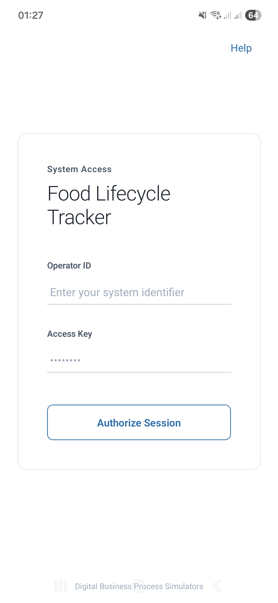

Functional Analysis and Business Logic of the Mobile ‘Digital Fridge’ Management System
A Brief Guide to Operational Scenarios, Interface Perimeters, and Inventory Management Logic
1 Introduction and Purpose of the Document
This specification provides a comprehensive description of the business logic and operational scenarios for the FoodLifecycleApp mobile application developed using the Flutter framework. The document is tailored for business analysts, product managers (Product Owners), and user interface designers (UX/UI), ensuring an end-to-end understanding of data flow rules and regulations governing how users interact with the system.
The mobile application operates as an automated resource management workstation, enabling users to maintain strict real-time accounting of food inventory turnover, track expiration dates, and minimize household or commercial food waste volumes.
The user interfaces and transition logic are engineered within the Shared Edge Node concept:
For Human Users: The application minimizes cognitive load and manual keyboard data entry, automating product logging through receipt scanning and underlying, background helper prompt algorithms.
For Digital Agents (Simulators): Software bots emulate the exact steps of live users, dispatching identical data packets and executing the same interface scenarios. This allows the system to accumulate consistent synthetic log arrays for backend stress testing and validating predictive algorithm precision.
2 Экраны интерфейсов (Эскиз) мобильного приложения (FoodLifecycleApp)
Шаг 2: Старт активности

Шаг 3: Выбор компании

Шаг 4: Выбор поля

Шаг 5: Выбор активности

Шаг 5: Выбор активности

Шаг 5: Выбор активности

3 The Concept of Consumer Affinity (Smart Prompt Matching)
To drastically reduce the time spent by users on manual inventory logging, the system implements a background mechanism called Consumer Affinity1.
The application continuously analyzes an individual’s purchasing frequency and product consumption patterns. If a user consistently logs the acquisition or consumption of specific stock-keeping units (SKUs) (e.g., milk or bananas), the corresponding affinity weight coefficient for those items is automatically incremented on the server.
The “Smart Matching” UI Impact: Utilizing this affinity matrix, the application dynamically restructures the layout of the primary dashboard screen. The user’s most frequently interacted products are automatically promoted to the top of the quick-prompt action bar. This eliminates the need for the human operator to navigate the global Master Data nomenclature catalog and manually query items using a search string; adding or deducting staple grocery baskets is compressed into a single click. This affinity approach has an alternate application: it ensures high fidelity for the “digital twin” software simulator.
4 Three Core Phases of the Resource Lifecycle within the Mobile Workstation
The end-to-end business logic of the application coordinates the movement of physical goods (food assets) across three sequential operational perimeters.
4.1 Phase 1: Asynchronous Import Pipeline and Receipt Verification Loop
The process of restocking the “digital fridge” is completely decoupled from mundane manual entry through the integration of Optical Character Recognition (OCR) algorithms.
This public documentation does not cover all steps and scenarios for the application specifically, or for the digital business process simulation ecosystem as a whole.
- The Asynchronous Interface Release Principle (Fire-and-Forget): For example, upon returning from a retail outlet, the user captures a photograph of the paper receipt (either commercial or fiscal). The mobile client instantly uploads the image to cloud storage, displays a “File Accepted” status, and fully unlocks the user interface. The user does not need to keep the screen active or wait for the neural network to finish the heavy processing required for tabular data extraction; they can minimize the application immediately.
- Isolation within the Draft Buffer: The parsed product JSON array generated on the server is not automatically pushed to the master inventory ledger, as the raw text extracted from the receipt may contain AI transcription errors. Instead, the system stores this list in a temporary staging buffer marked with a draft status.
- The Feedback Loop: Securing the draft entry triggers an asynchronous push notification. The user opens the “Receipt Drafts” workspace screen, reviews the transcribed product checklist, executes manual modifications to rectify any optical recognition errors (leveraging auto-suggestions pulled from the reference nomenclature catalog), and taps the “Confirm” button. Only after this step are the pristine data payloads “unpacked” into the permanent fridge inventory ledger.
📱 Purchase Perimeter DemonstrationThe video illustrates the end-to-end PyTorch MobileNetV2 inference flow triggered when dispatching an orange photograph captured via the mobile device camera.
|
4.2 Phase 2: Food Preparation Perimeter (COOK)
Once raw food assets are successfully logged within the digital fridge ledger (fact_inventory), they become accessible for internal processing modifications. The food preparation (culinary transformation) process defines the structural conversion of raw ingredients into a finished, ready-to-consume product entity.
This public documentation does not cover all steps and scenarios for the application specifically, or for the digital business process simulation ecosystem as a whole.
- Recipe-Driven Deductions: The user selects a specific routing sheet (recipe) from the Master Data catalog. The application’s underlying business logic automatically computes the required volume of raw ingredients and triggers a cascading deduction (e.g., reducing the available quantities of flour, milk, and eggs inside the fridge ledger).
- New Entity Generation: In place of the deducted raw ingredients, the system instantly instantiates a new relational record in the active inventory (e.g., “Pancakes”) and assigns it a processed product attribute flag (
is_cooked = TRUE). This explicit categorization enables downstream predictive analytics to accurately evaluate inventory structures and suppresses false automated buying recommendations for duplicate raw components.
📱 Cook Perimeter DemonstrationThe video illustrates the end-to-end PyTorch MobileNetV2 inference flow triggered when dispatching an orange photograph captured via the mobile device camera.
|
4.3 Phase 3: Consumption, Waste Disposal, and Background Voice Input Perimeters
The final stage of the resource lifecycle handles two distinct scenarios for removing product items from the active inventory balance: active utilization and destructive waste losses.
4.3.1 Scenario A: Direct Manual Consumption (CONSUME)
Under standard operating conditions when a product is eaten, the user logs this action with a single tap using the quick-prompts panel on the dashboard. The system instantly deducts the designated volume from the current inventory tables, moving the process token to its final event state and incrementing the item’s loyalty weight index within the consumer affinity matrix.
This public documentation does not cover all steps and scenarios for the application specifically, or for the digital business process simulation ecosystem as a whole.
📱 Consume Perimeter DemonstrationThe video illustrates the end-to-end PyTorch MobileNetV2 inference flow triggered when dispatching an orange photograph captured via the mobile device camera.
|
4.3.2 Scenario B: Waste Disposal (WASTE) and Voice Logging (Background Voice Reporting)
If a product spoils, corporate operational guidelines require logging its disposal into the waste log, along with the specific reasons for spoilage (e.g., “damaged”, “expiration date reached”). This granular tracking is essential for Forensic Analysis2 regarding shadow economy patterns within kitchen operations and for computing net financial deficits.
This public documentation does not cover all steps and scenarios for the application specifically, or for the digital business process simulation ecosystem as a whole.
To eliminate the need for manual, tedious lookup of spoiled items within a large inventory list, asynchronous voice input via the Whisper processing pipeline is applied at this stage:
- Voice Reporting: The user presses and holds a record switch to dictate a status change report: “Discarded two packages of spoiled cheese”. The audio file is instantly dispatched to the backend, and the application UI unlocks immediately under the Fire-and-Forget architecture.
- Textual Write-Off Draft: If the server-side AI transcribes the disposal intent with low confidence metrics, the user does not receive a receipt entry card; instead, a textual write-off draft report is delivered directly to their active screen. The human operator manually reviews and corrects any neural network spelling mistakes inside the UI container (e.g., replacing “chase” with “CHEDDAR CHEESE”) and hits “Ok”. The system then deducts the corresponding inventory volume and locks down the direct financial deficit inside the analytical losses ledger (
waste_log).
📱 Waste Perimeter DemonstrationThe video illustrates the end-to-end PyTorch MobileNetV2 inference flow triggered when dispatching an orange photograph captured via the mobile device camera.
|
5 Automated Idle-State Lifecycle Management
Unlike the agricultural tracker, where an active session is strictly bound to an employee’s field working hours, the session timeout within the food tracker (enterprise configuration) monitors the expiration dates and spoilage of the resources themselves.
If a user minimizes the application, locks the device screen, or leaves on vacation while leaving perishable stock-keeping units inside the “digital fridge,” the system does not leave these records unaltered. Upon exceeding the predefined regulatory storage shelf-life (e.g., a 3-day threshold for the dairy category), backend background schedulers execute an automated flag for forced resource deduction or perform an automated forced resource write-off, dispatching a corresponding notification to the user. While in domestic scenarios such items might not be disposed of immediately due to alternative applications, this functional mechanism is fully operational when running the platform in enterprise mode.
The system silently transitions the product state attribute to EXPIRED, zeroes out its remaining inventory balances, and generates a passive financial loss alert. Upon the next application launch, the user (or organization) encounters an emptied fridge ledger and receives an analytical push report engineered to incentivize more disciplined procurement planning.
6 Future Platform Evolution: Operational Group Expansion
The established shared-data architectural model and its accompanying orchestration pathways were fundamentally engineered with horizontal scalability in mind to support operational group expansions. The long-term product roadmap plans a sequential transition from individual domestic tracking to coordinating complex, industrial, and corporate-wide supply chains.
The Apache Kafka message broker schemas and underlying persistent database storage tables already contain extension fields to natively support two new operational perimeters:
- Automated Restaurant and Food Retail Group (e.g., for Tourism Clusters): Native integration with smart vending machines, point-of-sale (POS) terminal networks, and inventory weight sensors within storage facilities to automatically deduct ingredient balances the moment commercial receipts are processed.
- Autonomous Robotics and Smart Storage Zones Group: Connectivity vectors for automated sorting conveyors, robotic kitchen modules, and cold-storage units embedded with computer vision systems (completely bypassing manual user data entry). These robotic nodes will stream coordinate telemetry and material movement metrics directly to the “digital fridge” infrastructure, generating seamless end-to-end Process Mining maps across the enterprise’s entire food supply pipeline.
7 Conclusion
The functional analysis and business logic design of the client-side perimeter for the FoodLifecycleApp mobile application, built on the Flutter framework, have successfully delivered a streamlined, highly intuitive automated workstation for managing a “digital fridge” that remains completely decoupled from resource-intensive server-side processing.
- Ergonomics and Data Entry Minimization: Separating operational workflows into asynchronous receipt importing, background smart-prompt selection algorithms (Affinity), and hands-free voice input processing (Whisper) effectively compresses user cognitive loads to an absolute minimum. The mobile device screen unlocks almost instantaneously, eliminating any wait times for heavy neural network model executions.
- Master Data Consistency and Loss Accounting: Cascading validation filters for textual draft processing, paired with the mandatory recording of spoilage reasons inside the
Wasteperimeter, successfully safeguard the analytical layer against excessively corrupted data streams. Automated background deductions of expired inventory items guarantee high precision and real-time accuracy for resource balance metrics, even during prolonged periods of user inactivity.
The engineered layout architecture represents a unified Shared-Edge standard. It guarantees absolute identity between the operational traces generated by real human users and those generated by autonomous simulation agents, establishing a dependable foundation for subsequent end-to-end business intelligence analytics and predictive modeling.
Footnotes
Consumer Affinity defines the degree of an individual consumer’s emotional attachment and alignment toward a specific brand or product, heavily driven by shared values and habits rather than purely rational variables like price points or promotional discounts.↩︎
Forensic Analysis in relation to enterprise personnel is an independent internal investigation methodology aimed at uncovering, proving, and preventing corporate fraud, theft, embezzlement, corruption, or data leaks committed by employees.↩︎